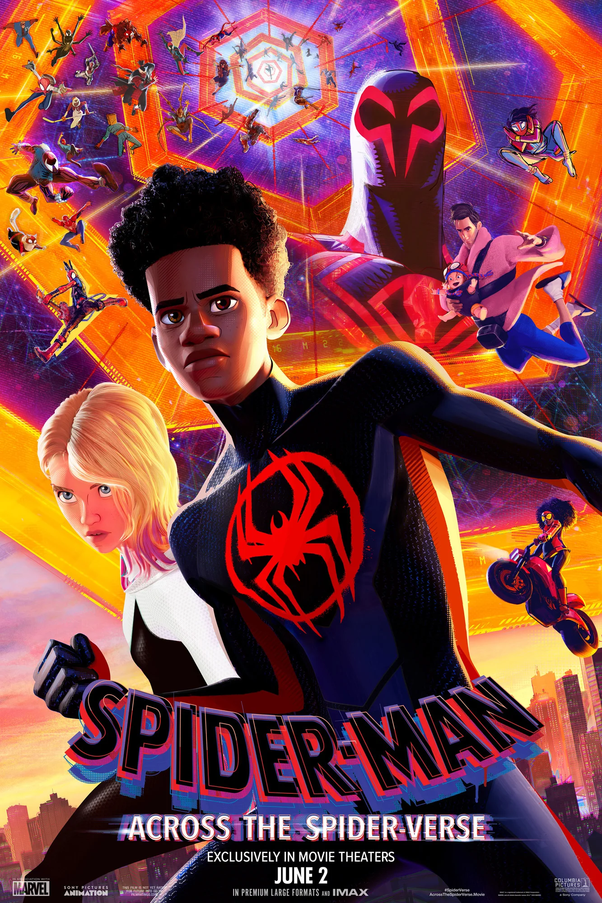

Capas
-
Homem aranha no aranhaverso

-
Homem aranha através do aranhaverso

Miles Morales é um adolescente do Brooklyn que assume o manto do Homem-Aranha em seu universo. Ele é um jovem herói cheio de potencial, ainda descobrindo suas habilidades e seu lugar como herói. Além das habilidades tradicionais do Homem-Aranha, como força, agilidade e aderência às paredes, Miles também possui poderes únicos como invisibilidade e uma descarga bioelétrica chamada "venom blast". Seu traje preto com detalhes em vermelho reflete sua identidade distinta, e sua jornada é marcada pela busca de autoconfiança e pela responsabilidade de proteger os outros.
Gwen Stacy, também conhecida como Mulher-Aranha ou "Spider-Gwen", é uma heroína destemida e talentosa de um universo alternativo onde ela, e não Peter Parker, foi picada pela aranha radioativa. Ela é uma personagem ágil, inteligente e com uma atitude punk rock, muitas vezes vista tocando bateria em uma banda. Seu traje branco, preto e rosa, com capuz, é estiloso e único. Gwen luta para equilibrar sua vida como super-heroína e as responsabilidades pessoais, trazendo uma perspectiva única e refrescante ao grupo de aranhas.
Peter B. Parker é uma versão mais velha e cansada do clássico Homem-Aranha, que já passou por altos e baixos na vida. Ele é um herói veterano, com anos de experiência em combate ao crime, mas que também carrega cicatrizes emocionais e físicas de suas lutas. Seu traje é familiar, mas ele é mais relaxado e desleixado, refletindo sua personalidade. Apesar de seu cansaço, Peter B. ainda é espirituoso, sarcástico e um mentor relutante, oferecendo conselhos valiosos enquanto tenta encontrar um novo propósito em sua vida.
Peni Parker é uma jovem de origem japonesa que pilota um mecha conhecido como SP//dr, ligado a ela através de uma conexão psíquica com uma aranha radioativa. Em um universo altamente tecnológico, Peni é uma prodígio científica, com grande habilidade em robótica. Seu design é inspirado em animes, e ela possui uma personalidade corajosa e determinada, sempre pronta para enfrentar desafios com seu mecha futurista. Peni e SP//dr trabalham em perfeita harmonia, formando uma parceria única entre humano e máquina.
O Homem-Aranha Noir é uma versão do herói originária de um universo sombrio dos anos 1930, em plena Era da Depressão. Ele é um vigilante que opera nas sombras, lutando contra o crime organizado com uma atitude endurecida pelo mundo brutal em que vive. Seu traje é preto, com um visual reminiscente dos filmes noir, incluindo um sobretudo e um chapéu fedora. Ele é durão, fala com uma linguagem antiquada e tem uma abordagem mais violenta e direta na luta contra o mal, trazendo uma estética estilizada e única para o grupo.
Spider-Ham, também conhecido como Porco-Aranha ou Peter Porker, é uma versão antropomórfica e cômica do Homem-Aranha originária de um universo cartunesco. Ele é um porco que foi mordido por uma aranha radioativa, ganhando habilidades aracnídeas, como força aumentada, aderência às paredes e o uso de teias. Seu visual é caricatural e colorido, e ele é uma fonte constante de humor e alívio cômico, frequentemente fazendo piadas e referências absurdas. Apesar de seu estilo leve, Spider-Ham é corajoso e determinado a ajudar seus amigos a salvar o multiverso.
Gatuno é um mercenário ágil e mortal, equipado com um traje de alta tecnologia que inclui garras afiadas e habilidades de camuflagem. Ele é conhecido por sua velocidade e destreza, sendo um mestre em operações furtivas e ataques rápidos. Seu visual intimidador e métodos eficientes fazem dele um adversário formidável, especialmente nas sombras.
Wilson Fisk, mais conhecido como Rei do Crime, é um dos vilões mais icônicos do Homem-Aranha. Ele é um gigante tanto em tamanho quanto em influência, com uma força física incrível e uma mente estratégica afiada. Apesar de sua aparência massiva, ele é surpreendentemente ágil e letal em combate. Fisk controla um vasto império criminal em Nova York, sendo poderoso e temido no submundo.
Esta versão alternativa do Dr. Octopus é uma cientista extremamente inteligente e perigosa. Ela utiliza um conjunto de tentáculos mecânicos altamente avançados que são controlados diretamente por seu cérebro, permitindo movimentos rápidos e precisos. Os tentáculos podem ser usados tanto para ataque quanto para manipular equipamentos e realizar experimentos complexos.
O Mancha é um vilão peculiar e único, com o corpo coberto por manchas negras que funcionam como portais interdimensionais. Essas manchas permitem que ele teleporte partes do corpo ou objetos, tornando-o um adversário incrivelmente imprevisível. Ele pode, por exemplo, socar através de uma mancha em seu torso e fazer o golpe surgir de outra mancha a metros de distância.
Miguel O'Hara é o Homem-Aranha do ano de 2099, um futuro distópico onde ele combate o crime em uma Nova York tecnológica e opressiva. Diferente do Homem-Aranha tradicional, Miguel tem poderes que incluem garras retráteis, visão aguçada e habilidades avançadas de escalada. Seu traje é equipado com tecnologia futurista, incluindo um planador de teia. Ele é sério e determinado, com uma abordagem pragmática e muitas vezes solitária para proteger sua realidade.